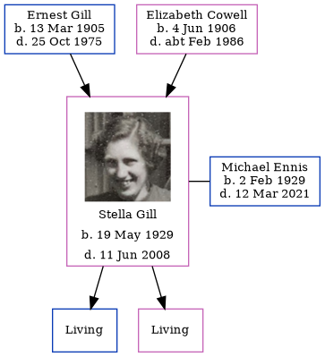

Stella Patricia Ennis (née Gill) 1929 - 2008
[ Home ] | [ Calendar ] | [ Surnames Index ] | [ Errors ] | [ Family History ]The older of 2 children of Ernest Gill (a bricklayer) and Elizabeth Cowell (a dressmaker), Stella Gill, the second cousin on the mother's side of Nigel Horne, was born in Westhampnett, Sussex, England on 19 May 19291,2,3 and. She married Michael Ennis (with whom she had 2 surviving children Martin Michael and Elizabeth Jane) in South Bersted, Sussex, England on 17 Nov 19565. On 29 Sept 1939, she was living at Conway, 24 Murina Avenue, Bognor Regis, West Sussex, England - less than a mile from her uncle Albert Cowell who was living at 65 Highfield Road, Bognor Regis, Sussex.
She died on 11 Jun 2008 in Swindon, Wiltshire, England4.
Parents
- Ernest Victor was born on 13 Mar 1905
- Elizabeth Emma was born on 4 Jun 1906
Citations
- England & Wales births 1837-2006 - Findmypast
- England & Wales, Birth Index: 1916-2005 Online publication - Provo, UT, USA: The Generations Network, Inc., 2008.Original data - General Register Office. England and Wales Civil Registration Indexes. London, England: General Register Office. © Crown copyright. Published by permission of the Cont
- Volume: 2B; Page: 545; Line Number: 34; Record set: England & Wales births 1837-2006; Subcategory: Births & baptisms; Category: Birth, Marriage & Death (Parish Registers); Collections from: United Kingdom;
- United Kingdom Deaths - Findmypast
- England & Wales Marriages 1837-2005 - Findmypast
Media
Ernest Victor Gill - Elizabeth Emma Cowell - Stella Gill

Stella Gill
England & Wales marriages 1837-2008 - BMD/M/1956/4/AZ/000415/040
England & Wales births 1837-2006 - BMD/B/1929/2/AZ/000464/034
England & Wales marriages 1837-2008 - BMD/M/1956/4/AZ/000332/033
UK electoral registers 2002-2014 Transcription - 192-ENNIS-MICHAEL-SN2-1150444210
United Kingdom Deaths - BMD/D/MILLEN/003026775
Family Trees - FMP/1208648905
Family Tree
Map
Generated by ged2site. Last updated on Jul 3, 2024
Known Issues
Residence record for 29 Sep 1939 contains no citation